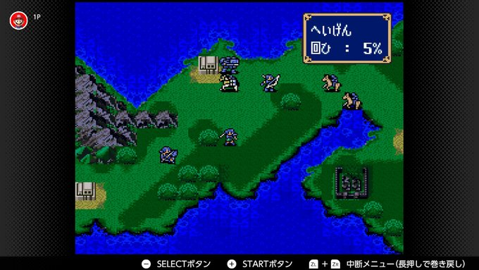
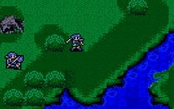
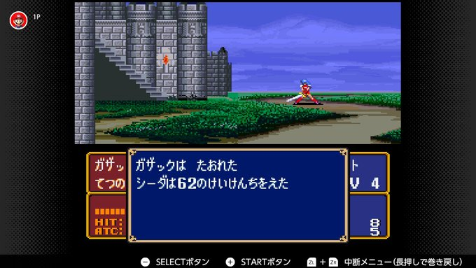
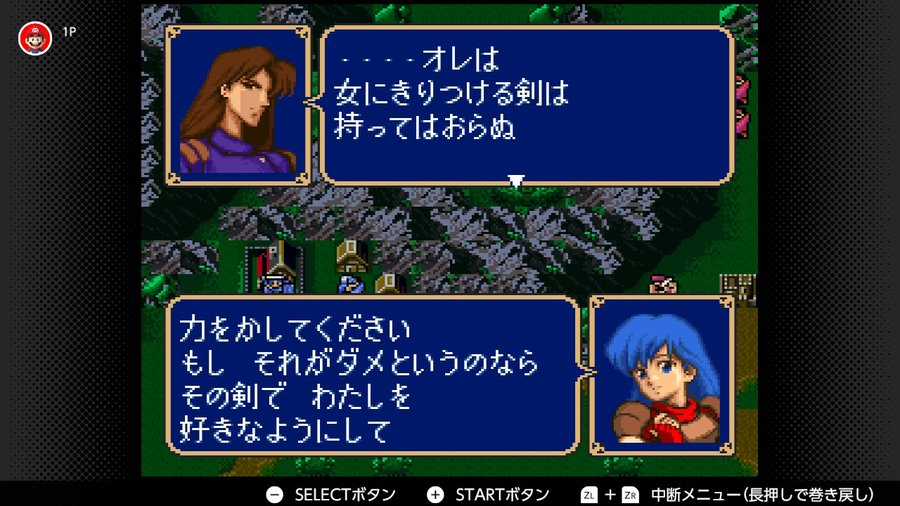

女性オンリーでいく
ファイアーエムブレム紋章の謎
更新日 2023年5月17日
みかん農園>ゲーム
◇1_6章
エンゲージも遊びつくした自分が新たなFEのやりごたえを求めてNintendo Onlineで
ファイアーエムブレム紋章の謎
を女性キャラオンリーで突入することを目指す備忘録
FEの主人公は闘いを経ていく中で辛く厳しい目に遭うことが多い中で開幕から祖国を落とされ家族を失い城を追われて亡命することになりながら
二年も過ごすという開幕からハードモード主人公のマルス王子

早速、シーダ姫を使って行きたいところだが、彼女一人ではあまりにも荷が重すぎた為、序盤の壁役でのみジェイガンとドーガを使用するという自分に甘すぎるプレイで進めること数分。
最近はチェンジプルフなどで兵種変更が出来てしまうため、すっかり使われないシステムだろうがファミコン版紋章では騎兵系ユニットは歩兵と乗馬状態を自在に切り替えることが出来るため、斧持ちの多い序盤で剣をメインに持ち帰る歩兵状態で進撃を開始することにした。

歩兵シータのグラフィックが結構かわいい
伝説のシーン
紋章の謎。消えたリフの謎

海賊討伐ステージ。オグマ隊長と愉快な三人が仲間になる。
なお、マップ上部にいたダロスはどうやらいなくなった模様。
シーダとジェイガン、ドーガで上から来る海賊の対処に当たっていた際にいつの間にかカシムを倒してしまったらしいことと抑えきれなかった海賊にサジが倒されてしまったなど早くもキャラロストの憂き目に遭うも今回は女性キャラオンリーのために続行
最近の作品だと、民家に訪問して情報を集めるなどのシステムはご無沙汰になってしまった為に、懐かしさを感じながらクリア。
なおこの章でミネルバ様がだいぶ先で仲間になるまで戦えるキャラが実質シーダ一人であることに気付く
レナさんかわいい
山の向こう側にいる盗賊たちからレナとジュリアンを逃がしつつシーダを砦に乗せて迎撃していくスタイルを取る
んなもん渡してくんなというツッコミも半ばに、シーダ一人に戦闘を任せていたら彼女一人に当然経験値が集約されて雑に置いといても簡単に殲滅することが出来た。
くらえ！ 必殺の剣！！(cv.子安武人)

伝説のシーン。その剣でわたしを好きなようにして
それ持ってっていいんだろうか……。
タリス王からもらった軍資金より多いぞ……
あと、レナさんのリライブの杖を取り戻すつもりだったが、ボスを倒してもドロップせず、そもそもどうやって取り返すのか。すっかり忘れてクリアしてしまったことも
ここに付け加えておく
ハーディン率いるオレルアンの戦士たち
リメイク版だと異様な高成長を見せたウルフとサガロ。オレルアンのいい男。そうだよロシェ。などネタに事欠かないメンバ―たちが大量加入するが攻略には使わないので。
なお、この章で今作には三すくみの概念がなかったことを思い出した。
エンゲージとか三すくみが当たり前になっていたのをずっとやっていたら自然と根付いてしまったのだったが、この章辺りから盗賊退治も終わり騎馬系ユニットが増えるようになるのでこのタイミングで思い出せて本当に良かったと思える。
弓兵には注意が必要なのは変らないが、中盤まで弓で一撃死しかねないペガサスナイト一体よりもずっと攻略が楽であると思うと、この乗り降り自由なシステムはありがたいところだ。
初期はレベル差に比例して習得経験値が減るなどの複雑な演算もなく、何レベルであっても敵一体倒せば30くらいの経験値が普通にもらえてしまうため非常にレベリングがしやすくシーダのレベルも16とこの章にしては十分破格のステータスとなったので攻略方法さえ間違わなければ余り困ることもなさそうだ。
ぎんのやり持ちと言えアーマーナイトすらこんなあっさり倒せてよいのだろうか。
攻略にかなりの無理を感じてしまいながら次の章へと進む。
そういえばバカ兄貴の説得間に合わなかった……
初の攻城マップ。fc版では騎馬ユニットは自動で乗物から降りる仕組みになっているので剣士シーダでトライ。
まずはさらっと、リカードとウェンデルを仲間に
.jpg)
.jpg)
<
宝箱は極力全部回収したかったが、縛りプレイで使えるユニットの少なさゆえの進軍の遅さが禍いして、宝箱は殆ど持ち逃げされてしまう。
アーマーキラーだけはなんとしても死守しておきたかったが、もたついてる間に逃げられ5000Gしか得られなかった…
そしてここで問題発生
銀の剣を装備したシータの攻撃でたったの4ダメージ×2の8しか与えられないことに気付く。
玉座の回復効果と相まって、差し引き2ダメージずつ。時間をかければ倒せそうだが、銀の剣の耐久が残り僅かであったことに気付きあわや詰みかと思われたが…
必殺技を立て続けに出すという超ファインプレーにて撃破
無事、マルス王子はニーナ王女からファイアーエムブレム宝の鍵を預かれたのだった
そういえばいつの間にかリライブ持ってた
ミネルバ様初登場マップ、この章ではすぐ撤退してしまうので仲間にできないが。
余談だがマップイベントでミネルバ様が竜に乗ったと言うタイミング歩兵と竜騎乗状態をスムーズに移行させているのがよく工夫されているのを感じた
まずは、バヌトゥを仲間にして
村からグルーっと回って、城へと向かうと
増援出現、タイトルのレフカンティの罠とはこれのことのようだ
とにかくこの罠。増援が多い。こちらはシーダ一人に迎え打たせるも、一向に終わらない増援との戦い。下手にレナを突っ込ませてライブにたよることもできないので、砦の上でひたすら相手の攻撃が外れることを願うお祈り状態が続くこと7ターン
ようやく増援を退けることに成功するがまたしてもここで問題発生
ジェネラルをどうあがいても倒せない事態が発生。てやり投げてもダメージが通らず詰みを覚悟したが……
こんな事になる気がしていたので、マリクを出撃させておりエクスカリバーで撃破するという策を取っていた。
縛りプレイをやると宣言しておきながら逃げに走った全エムブレマーからぶん殴られそうな暴挙に及ぶも、やはり前回でアーマーキラーを回収できなかったのが響いているのを痛感しながら後にするのだった
.jpg)
.jpg)
.jpg)
.jpg)

.jpg)
.jpg)
.jpg)
.jpg)
.jpg)
.jpg)
.jpg)
.jpg)
.jpg)
.jpg)
.jpg)
.jpg)
.jpg)
.jpg)
.jpg)
.jpg)
.jpg)